- Overview
- Requirements
- Browser Compatibility
- Advanced Triggers
- PMFCloneAndRestartCase()
- PMFCrudTable()
- Function Definition
- Example 1: Inserting a record in a table
- Example 2: Updating a record in a table
- Example 3: Deleting a record in a table
- PMFGeneratePdf()
- PMFGetCaseNumber()
- PMFGetFieldsOfDynaform()
- PMFGetGroupsOfUser()
- PMFGetInputsDocumentsOfCase()
- PMFGetRolUser()
- PMFGetUserReportsTo()
- PMFGetUsersOfTask()
- PMFLoadGrid()
- PMFSetOnVacation()
 Plugin Version: 2.5.0 | Release Notes | Downloadable version
Plugin Version: 2.5.0 | Release Notes | Downloadable version
Overview
The PowerUp plugin includes 12 extra functions, which improve the generation of PDF documents, load the data inside a grid, reassign the cases of a user who is on vacation, among others. These extra functions making coding triggers easier and simpler, since they allow process designers to avoid using complicated internal classes and complex database queries.
In addition, the PowerUp plugin includes 3 new fields, which can be used to improve existing DynaForms.
Requirements
- ProcessMaker v2.5.x or higher (stable version + available hotfix)
- Enterprise Plugin v2.0.17 or higher (stable version + available hotfix)
Browser Compatibility
This plugin has been tested on:
- Firefox v.26
- Chrome V.31
- Internet Explorer v. 8 and 9
Advanced Triggers
PMFCloneAndRestartCase()
PMFCloneAndRestartCase() makes an identical copy of a specified case, including all the data generated in the case. The copy of the case will be stored in the DRAFT folder. The status of the original case can changed to CANCELLED or PAUSED.
Note: System Variables, Input Documents, Output Documents and Case Notes won't be copied when the case is cloned. PMFCloneAndRestartCase() only clones the case variables stored in the <WORKSPACE>.APPLICATION.APP_DATA field.
Function Definition
Parameters:
- string appUid: The unique ID of the case to be cloned. To clone the current case, use the system variable @@APPLICATION.
- string statusCurrentCase: Optional parameter. Set the status of the original case, which can be 'PAUSED' or 'CANCELLED'. If not included or set to '' (empty string), then the status of the original case will not change.
- string unPauseDate: Optional parameter. If the status of the original case is set to 'PAUSED', then the date when it will be unpaused on the specified date. Use the YYYY-MM-DD format, so July 1, 2015, would be '2015-07-01' If this parameter isn't included or set to '' (empty string), then the original case will be paused indefinitely until it is manually unpaused.
Return value:
- int. It returns the case number for the new case which was created.
If appUid is empty, PMFCloneAndRestartCase() returns false. If appUid isn't a valid case ID, then the function is caught by an exception and @@__ERROR__ will contain the message "The Application row '<CASE-UID>' doesn't exist!". To handle the exception, the function should be enclosed in a try{...} catch{...} clause.
Example
Create a trigger which clones the current case. Open a process for editing and go to the TRIGGERS tab. Click on "New" and expand ProcessMaker Advanced Triggers, then select "Create a new case based on the data of an already existing case (PMFCloneAndRestartCase)".
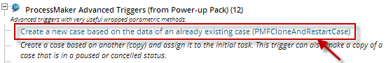
Fill in the following parameters for the function:
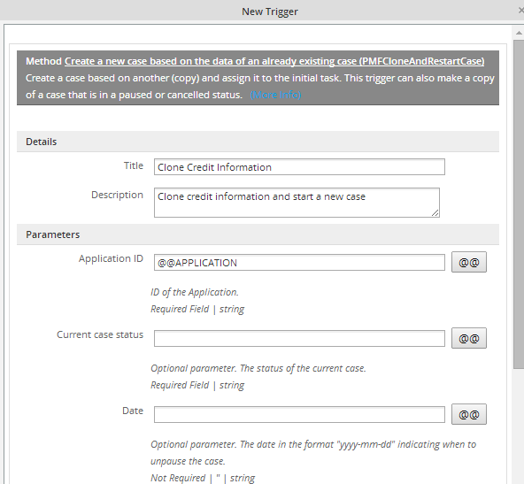
The function definition will be:
This example uses the system variable @@APPLICATION, so the current case which is #202 will be cloned:
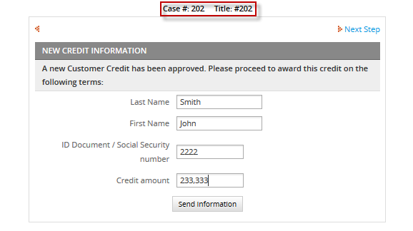
When checked in the the ProcessMaker debugger, a new case, whose case number is 203 was created:

Both the original and the cloned cases are now found in the Draft folder
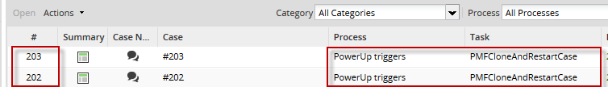
PMFCrudTable()
PMFCrudTable() inserts, updates or deletes a single record in a MySQL table. This function can be used with any MySQL table, including PMtables and Report Tables, but it will not work with any other type of database.
Function Definition
Parameters:
- string option. Define the type of SQL operation to execute. Possible values: 'insert', 'update' or 'delete'
- string table. Name of the table where the operation will take place. Note that MySQL table names are case sensitive by default in Linux/UNIX, but not case sensitive in Windows.
- array data. Optional parameter. Leave this parameter blank for delete operations. For insert and update operations, define an array of values which will be inserted or updated:
- array('value1', 'value2', ...)
- Do not include values for fields which are auto-incremented and make sure that the values are listed in the same order as they are defined in the table. If the value is input by the user or it might contain single quotation marks, use mysql_real_escape_string() to escape single quotation marks and prevent SQL injection attacks. See the example below.
- string idTable. Optional parameter. The unique identifier of the record to be affected. This must be the value found in the primary key field of the table. This value must be specified for delete and update operations. For insert operations, this value may be left blank if the primary key field is auto-incremented by the database.
- string dbConectionUid. Optional parameter. The UID of the database connection where the operation will be executed, or one of the databases for the current workspace: 'workflow', 'rbac' or 'rp'. If not included, then it will be the current workflow database by default. See executeQuery() for more information.
Return value:
- int. Returns 1 if the operation was successful, or 0 if unsuccessful. If the database is not MySQL or an exception was thrown, then returns null. To check whether an exception was thrown while executing PMFCrudTable(), see Error Management.
Example 1: Inserting a record in a table
The example below explains how to insert information filled in a DynaForm into a table.
1. Create a simple table named USER_INFORMATION with the following fields:
2. Create a DynaForm with the same field names as were defined in the USER_INFORMATION table:

3. Now, create a trigger which will be set to fire after the DynaForm. Open a process for editing and go to "TRIGGERS". Expand "ProcessMaker Advanced Triggers" and click on the PMFCrudTable() function. Fill in the form with the following information:
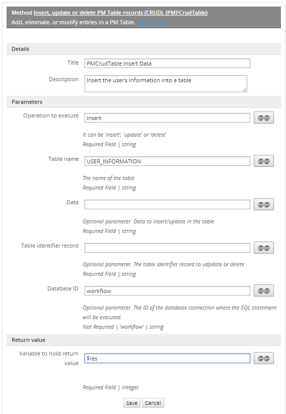
Edit the source code of the trigger in order to place the values from the DynaForm fields in the $data array, so those values can be used by PMFCrudTable() to insert a new record in the USER_INFORMATION table:
$res = PMFCrudTable('insert', 'USER_INFORMATION', $data, 'workflow');
Note that the primary key field Code is not auto incrementing, so a value for the Code field has to be included in the $data array. Set the trigger to fire after the DynaForm.
4. Finally, execute a case and fill in the DynaForm with user's information:
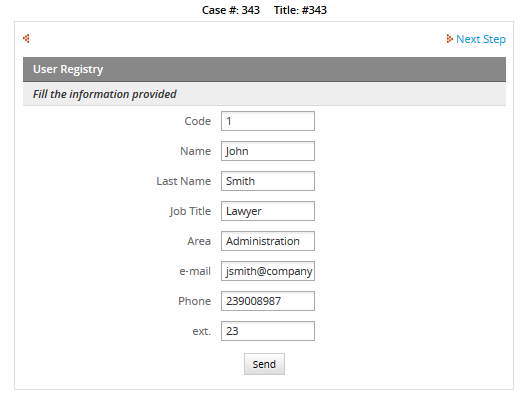
Click on the Submit button and check whether a new record was added to the USER_INFORMATION table:
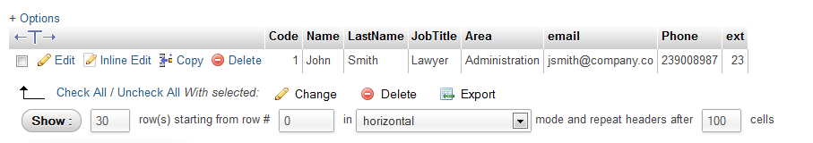
Example 2: Updating a record in a table
The example below explains how to update information stored in a table. For this example, a record will be updated in the table created in the Example 1 from information filled in a DynaForm.
1. Create a simple process with the same field names defined in the table. The Dynaform should look something like:
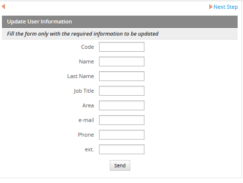
2.Create the trigger with the corresponding function. Go to "TRIGGERS", expand ProcessMaker Advanced Triggers, click on the PMFCrudTable() function, and fill in the following information:
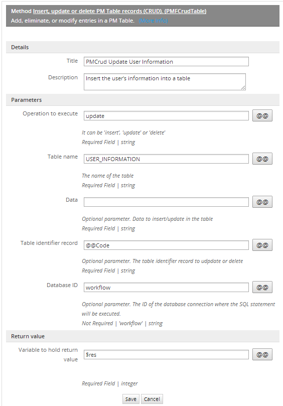
Enter the field for the primary key, which is @@Code in this example, in the Record table identifier parameter.
Then, edit the source code of the trigger to populate the $data variable with the values entered in the DynaForm fields. Then, pass $data as a parameter in the PMFCrudTable() function:
$res = PMFCrudTable('update', 'USER_INFORMATION', $data, @@Code, 'workflow');
Set the trigger to fire after the DynaForm is executed.
3. When executing a case, change the information in the DynaForm by changing the name of the user from "John Smith" to "John Meyer":

Click on Submit and then check whether the record in the USER_INFORMATION table has been updated:
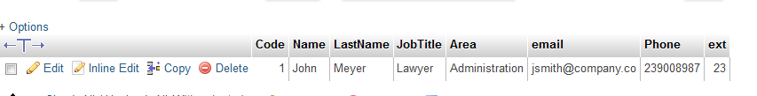
Example 3: Deleting a record in a table
This example shows how to delete a record stored in the USER_INFORMATION table, which was created in Example 1.
1. Create a DynaForm to enter the code of a user who will be deleted from the USER_INFORMATION table:
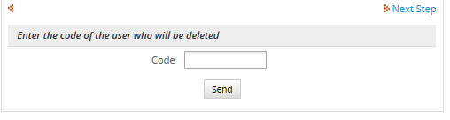
2. Now, create a trigger. Go to "TRIGGERS", expand ProcessMaker Advanced Triggers, click on the PMFCrudTable() function, and fill in the following information:
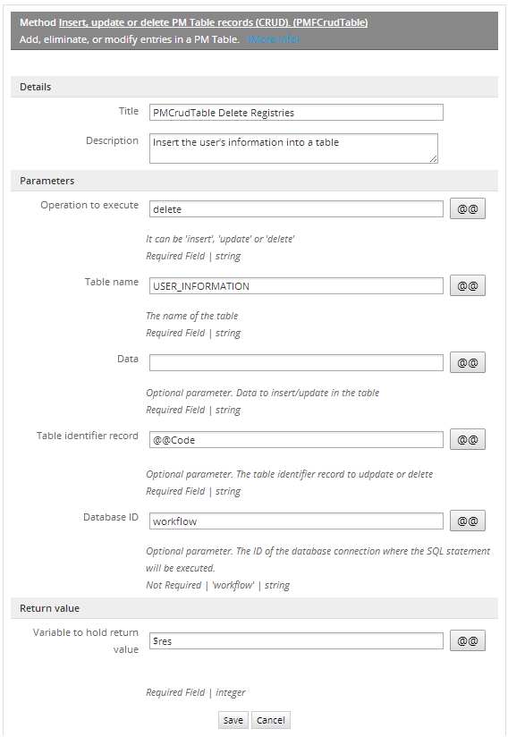
Only the primary key is needed to identify which record to delete in the USER_INFORMATION table, which in this example is @@code. Set the above trigger to fire after the DynaForm.
3. Execute a case and enter the code of the user to be deleted, which in this example is 1 to delete the user "John Meyer":
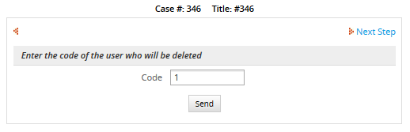
PMFGeneratePdf()
PMFGeneratePdf() generates a PDF document with pagination and a footer. This only works with Output Documents using the TCPDF library.
Function Definition
Parameters:
- string outputID: The unique ID of the Output Document, which can be found by opening the process for editing, going to the OUTPUT DOCUMENTS and clicking on the UID button for an Output Documnt. It can also found by following these instructions.
- string footerContent The content of the footer which will be placed at the end of the document. It must be enclosed in single quotes, i.e.: 'ProcessMaker Documentation'
- string sApplication: Optional parameter. The unique ID of the case where the Output Document will be generated. If omitted or set to NULL, then will create an Output Document file for the current case.
- int iDelegation: Optional parameter. The delegation index of the current task in the case. If omitted or set to NULL, then it will use the current task for the current case.
- string sUserLogged: Optional parameter. The unique ID of the user who will generate the PDF. This should be set to the user who is currently designated to work on the case. If omitted or set to NULL, then the currently logged-in user will be used.
Return value:
There is no return value.
Example
This example generates an Output Document in the current case with pagination and a footer.
1. Create an Invoice document using the TCPDF engine. Add some content in the document. Then, get the Output Document's unique ID.

2.Create the trigger. Go to "TRIGGERS", expand ProcessMaker Advanced Triggers, click on the PMFGeneratePdf() function, and fill in the following information:

The trigger's source code will be:
Then, assign the trigger to fire at some point during the process. Run a case and generate an Output Document:
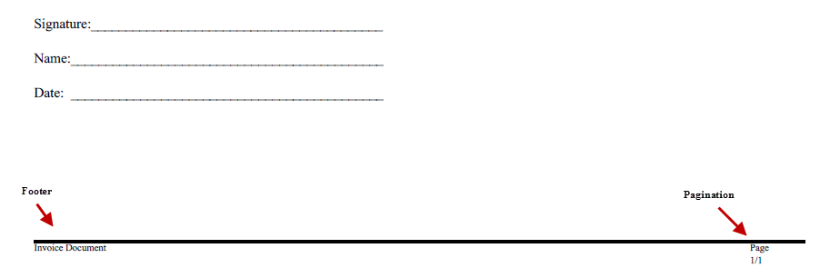
PMFGetCaseNumber()
PMFGetCaseNumber() returns the case number for a specified case. The case number is an integer, which increments by 1 for each new case in a workspace, so the case number for the first case is 1, the fifth case is 5, and the 623rd case is 623.
Function Definition
Parameters:
- string appUid: The unique ID of the case. To get the case number for current case, use the system variable @@APPLICATION.
Return Value:
- int: Returns the number of the case.
Example
Let's create a simple process where you will obtain the case number and send it to the next person who will continue the case, this will help next assigned user to know which case number needs to be opened.
Now, let's create the trigger with the corresponding function, so go to TRIGGERS tab, inside the process you are working on, select ProcessMaker Advanced Triggers and then look for the PMFGetCaseNumber() function and fill it with the following information:
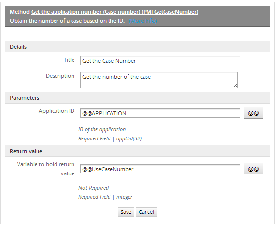
Its definition will be:
Then create an email template named template.html which uses the @@caseNumber variable:
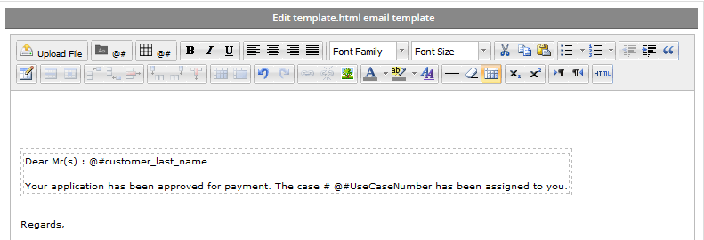
Then use the PMFSendMessage() function in order to send out an email in a subsequent trigger:
Inside the process, assign the trigger where the case number is obtained before the DynaForm you've created, and the trigger to send mails after that Dynaform. Executing case #205:
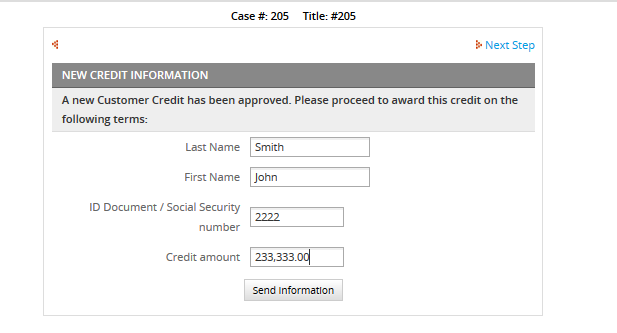
The email will be:
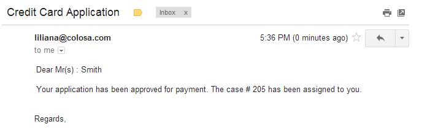
PMFGetFieldsOfDynaform()
PMFGetFieldsOfDynaform() returns information about the fields in a DynaForm fields, such as the field name, field type, and field label.
Function Definition
Parameters:
- string proUid: The unique ID of the process. For the current process, use the @@PROCESS system variable.
- string dynUid: The unique ID of the DynaForm whose list of fields will be retrieved.
Return Value:
An array, with the following structure:
Where:
- string FIELD_NAME: The field name, which is unique and identifies the field.
- string FIELD_LABEL: The field label, which is the text displayed on the DynaForm. Note that the value for hidden, javascript, image, documentviewer and inputdocview fields will be an empty string, because these fields do not have labels.
- string FIELD_TYPE: The field type: currency. percentage, password, suggest, textarea, title, subtitle, button, submit, reset, dropdown, yesno, listbox, checkbox, checkgroup, radiogroup, date, hidden, link, file, javascript, documentviewer, inputdocview or image.
Example
This example obtain a list of all the textbox fields in a DynaForm. First, get the unique ID for the DynaForm. Open the process which contains the DynaForm and go to the DYNAFORMS tab. In the list of DynaForms, click on the UID button for the DynaForm.

Now, create the trigger. Go to the TRIGGERS tab, select ProcessMaker Advanced Triggers and then look for the PMFGetFieldsOfDynaform() function and fill in the following information:

Then edit the trigger's source code, to add code which can look through the list of returned fields and copy those fields which are textboxes to the </code>@?TextboxList</code>:
This trigger can be set to fire at any point in a process, since the fields in a DynaForm will not change. If the debugger is enabled, then the contents of the @?result can be seen when running a case:
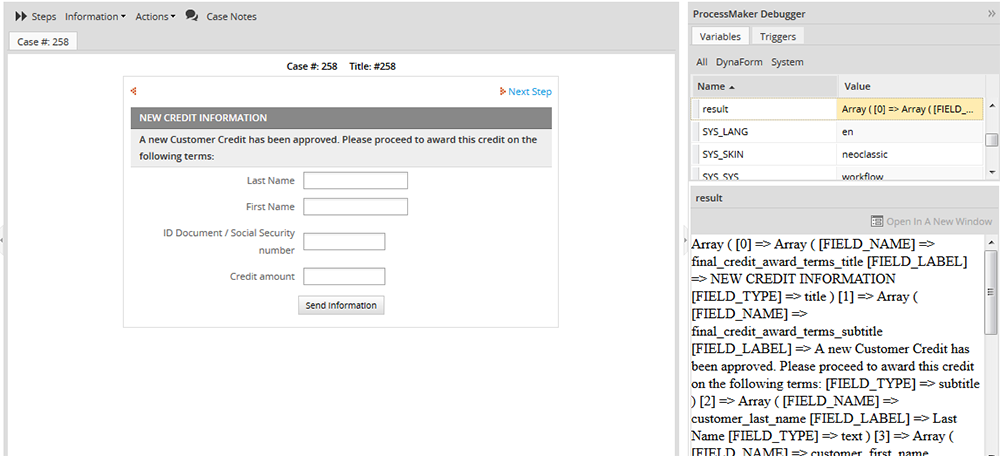
PMFGetGroupsOfUser()
PMFGetGroupsOfUser() obtains a list of groups to which a user is assigned.
Function Definition
Parameters:
- string userUid: The user's unique ID, which can be found in the following ways:
- Get the UID of the currently logged-in user with the @@USER_LOGGED system variable or $_SESSION['USER_LOGGED'].
- Use the PMFUserList() or WSUserList() functions, or the userList() web service.
- Query the wf_<WORKSPACE>.USERS.USR_UID field in the database with executeQuery().
- string statusGroup: Optional parameter. Group status. It can be ACTIVE, INACTIVE or ALL.
Return value:
array. If $userUid is not assigned a value, this function returns false. If the user doesn't exist or the user isn't assigned to any groups, then it returns an empty array. If the user is assigned to one or more groups, then it returns the following associative array:
Example
Create three groups and assign a user to them. Create a grid DynaForm with two fields: IDgroup and GroupName, both of them in view mode. Add the grid inside a Dynaform with a field name of "gridGroups".
Now, create a trigger which uses the PMFGetGroupsOfUser() function. Go to the "TRIGGERS" tab, expand ProcessMaker Advanced Triggers, click on the PMFGetGroupsOfUser() function and fill in the following information:
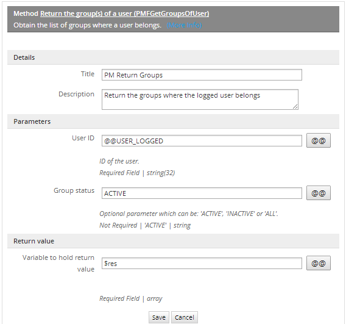
The following trigger code creates an array with the same structure as a grid. The trigger will set the contents of a grid which is named "gridGroups". Make sure to use the same name for the case variable and the field name of the grid object embedded in a master DynaForm. In this example, the function will return all ACTIVE groups.
In this example, one more trigger was created in order to know in which groups the user, who are executing the case, is assigned to. This example was used in order to get the corresponding information.
Assign both triggers before the DynaForm. When a case is executed, the list of groups will be displayed in the grid:
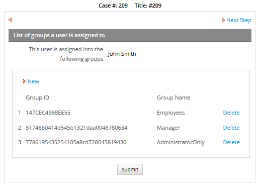
Knowing a user's groups can be useful when doing value based assignment in a case.
PMFGetInputsDocumentsOfCase()
PMFGetInputsDocumentsOfCase() obtains the list of files uploaded for a case or for a particular Input Document in a case.
Function Definition
Parameters:
- string appUid: The unique ID of the case. For the current case, set to the @@APPLICATION system variable.
- string inputDocUid: Optional parameter. The unique ID of an Input Document. If not included, then all the files uploaded during the case will be returned, including both Input Document files and any files uploaded to a file field in a DynaForm.
Return value:
If no files are found, then returns an empty array. If files are found, then returns an array with the following structure:
- [0] array
- ( associative array
- string ['APP_DOC_UID']: The unique ID for the uploaded file.
- int ['DOC_VERSION']: The version number of the file. The first version is 1, the second is 2, etc.
- string ['DOC_UID']: The unique ID for the Input Document.
- string ['APP_DOC_COMMENT']: Comment entered by user when file uploaded.
- string ['APP_DOC_FILENAME']: The original filename of the uploaded file.
- int ['APP_DOC_INDEX']: The index of the uploaded file. The first file for an Input Document is 1, the second is 2, etc.
- string ['TITLE']: The original filename, which is same as as ['APP_DOC_FILENAME'].
- int ['POSITION']: The number of the step when the file was uploaded. The first step in a task is 1, the second is 2, etc.
- string ['CONFIRM']: Message to confirm the deletion of the file in the current system language.
- string ['REPLACE_LABEL']: Label for the "replace" button, which is no longer used.
- string ['NEWVERSION_LABEL']: Label shown on button to add "New Version" in current system language.
- string ['VERSIONHISTORY_LABEL']: Label shown on button to see the "Version History" in current system language.
- string ['CREATOR']: The full name (first name and last name) of the user who uploaded the file.
- string ['APP_DOC_CREATE_DATE']: The datetime in the format YYYY-MM-DD HH:MM:SS when the file was uploaded. Ex: 2014-09-26 11:07:09
- string ['DOC_VERSION_LABEL']: The label shown for the version of the file, so the first version is '1', the second is '2', etc.
- string ['DOWNLOAD_LABEL']: The label for the "Download" button in the current system language.
- string ['DOWNLOAD_LINK']: The partial URL to download the file, using its APP_DOC_UID and DOC_VERSION numbers.
- Ex: 'cases_ShowDocument?a=106235827542580dfcfa708029871391&v=2'
- string ['COMMENT']: The file's comment, which is the same as ['APP_DOC_COMMENT'].
- )
- ...
An Input Document is identified by its DOC_UID and can have multiple files uploaded to it. Each new file which is uploaded to an Input Document has a different APP_DOC_UID. If a file has a new version, it will have the same APP_DOC_UID, but its APP_DOC_INDEX will be incremented by 1. In addition, all files regardless of whether they are new files or another version of an existing file are numbered in the order which they were uploaded in the APP_DOC_INDEX.
For example, a user uploads two files to an Input Document with the DOC_UID '747284426542478ef3e1a97070179701'. The first file is "Expense Report Part1.doc" and the second file is "Expense Report Part2.doc". Then the user revises the first file and uploads a new version with the filename "Expense Report Part1-revised.doc". These 3 files would be listed as:
- First file: "Expense Report Part1.doc"
- Second file: "Expense Report Part2.doc"
- New version of first file: "Expense Report Part1-revised.doc"
Example
This example obtains files uploaded during the execution of a case.
Create an input document and assign it to a task. Then, create a trigger. Go to TRIGGERS, expand ProcessMaker Advanced Triggers, click on the PMFGetInputsDocumentsOfCase() function and fill in the following information:

Its definition will be:
When the above trigger is executed, the list of Input Document files will be placed in an array in the @@res variable.
Set the trigger to fire after an Input Document. Note that if using version 2.5.1, the trigger must be assigned before the next step, otherwise the trigger won't be executed properly. In version 2.5.2 and later, it can be assigned after the Input Document. Enable ProcessMaker debugger in order to see the value of the @?res, while executing a case. In this example, two files are uploaded to the Input Document:
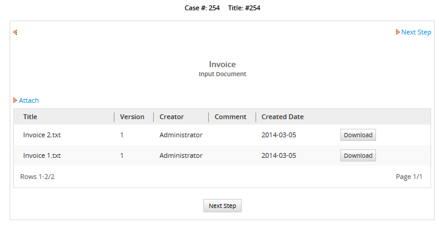
Click on next step, and look for the res variable in the debugger, which shows that two files were uploaded:
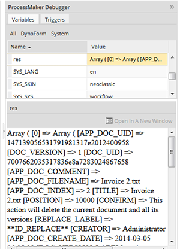
Create a download link
If the second parameter of the PMFGetInputsDocumentsOfCase() function isn't specified, then the function returns all the files uploaded to the case. To only get the files uploaded to a specific Input Document, set the second parameter to the Input Document UID. To get that ID, open a process for editing and go to the Input Documents tab. In the list of Input Documents, click on the UID button for a specific Input Document:

Then use that ID in the second parameter of the PMFGetInputsDocumentsOfCase() function.
In order to construct the complete URL to download a file, prepend http://<IP-ADDRESS>/sys<WORKSPACE>/<LANG>/<SKIN>/case to the DOwNLOAD_LINK. For example, if the DOWNLOAD_LINK is "cases_ShowDocument?a=106235827542580dfcfa708029871391&v=2", then prepend http://www.myserver.com/sysworkflow/en/neoclassic/cases/ to create the complete URL.
In this example, the trigger searches for the last file uploaded to the Input Document with the ID '7007662035317836e8a7283024867658'. It cycles through all the files and looks for the one with the largest APP_DOC_INDEX. Then creates a complete URL to download that file, which is stored in the variable @@FileLink:
//search for last uploaded file:
@@FileLink = '';
$lastIndex = 0;
foreach ($aFiles as $aFile) {
if ($lastIndex < $aFile['APP_DOC_INDEX']) {
$lastIndex = $aFile['APP_DOC_INDEX'];
@@FileLink = 'http://www.myserver.com/sysworkflow/en/neoclassic/cases/' . $aFile['DOWNLOAD_LINK'];
}
}
If a subsequent DynaForm has a link field named "FileLink", then it will use the URL set in the above trigger.
PMFGetRolUser()
PMFGetRolUser() obtains the role of a specified user.
Function Definition
Parameters:
- string userUid: The user's unique ID, which can be found in the following ways:
- Get the UID of the currently logged-in user with the @@USER_LOGGED system variable or $_SESSION['USER_LOGGED'].
- Use the PMFUserList() or WSUserList() functions, or the userList() web service.
- Query the wf_<WORKSPACE>.USERS.USR_UID field in the database with executeQuery().
Return value:
string. It returns the name of the role.
Example
This example obtains the role a user belongs to. Create a Dynaform with text field named "Usr_Role". Then, create the trigger with the corresponding function, so go to the "TRIGGERS" tab, expand "ProcessMaker Advanced Triggers", click on the PMFGetRolUser() function and fill in the following information:
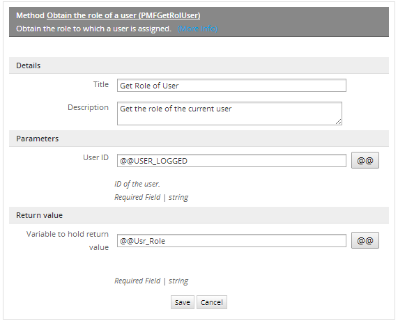
Its definition will be:
Assign the trigger to fire before the DynaForm. When a case is executed, the user's role can be obtained:

This information may be used as a part of the user information displayed in a DynaForm. It can also be used in a condition to determine which tasks or steps are executed in the process.
PMFGetUserReportsTo()
PMFGetUserReportsTo() returns the unique ID of the supervisor for a specified user.
Function Definition
Parameters:
- string userUid: The user's unique ID, which can be found in the following ways:
- Get the UID of the currently logged-in user with the @@USER_LOGGED system variable or $_SESSION['USER_LOGGED'].
- Use the PMFUserList() or WSUserList() functions, or the userList() web service.
- Query the wf_<WORKSPACE>.USERS.USR_UID field in the database with executeQuery().
Return value:
string. It returns the unique ID of the supervisor.
Example
This example uses the sample "Expense Report" process, to obtain the supervisor ID of the user who is executing the current case. That ID is used to send an email to the supervisor, to get the Cash Advance Approved.
First create two users and assign them to a department and make one of them a Supervisor:

Then, inside the dynaform (in the case of the example the corresponding dynaform for the Expense report will be Cash Travel Advanced), create a hidden variable named IdSupervisor, there we will save the Supervisor ID which will be used in the trigger. In the following example, we will obtain the role a user belongs to, so, just create a Dynaform with a field name Usr_Role.
Then, create the trigger with the corresponding function, go to "TRIGGERS" inside the process you are working on, select "ProcessMaker Advanced Triggers", look for the PMFGetUserReportsTo() function and fill it with the following information:
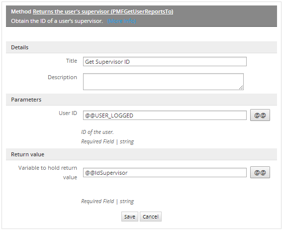
In the following trigger, the supervisor's ID is saved to the variable @@IdSupervisor. This variable is then used in the PMFInformationUser() function to look up the email address of the supervisor and send him/her an email.
$aUser = PMFInformationUser(@@IdSupervisor);
@@mail = $aUser['mail'];
@@return=PMFSendMessage(@@APPLICATION, 'liliana@colosa.com', @@mail, '', '', 'Approve Advance Cash', 'template.html');
Assign this trigger to fire before the Dynaform. Then, create another trigger using the PMFSendMessage() function to send the email with the @@email variable where you will get the supervisor's email:
Finally, assign this trigger after the Dynaform, in order to send the email as soon as the information is filled. Then start the case, the following Dynaform will be used in order to send information for the corresponding approval:
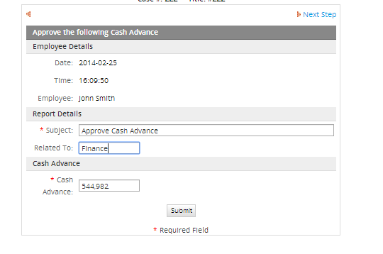
If you enable your debug, it will be possible to view the supervisor ID and his/her email information:
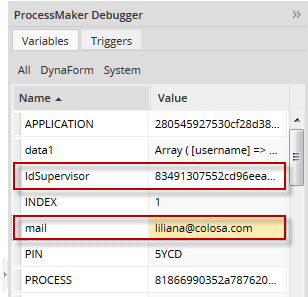
This will help us to know if the values are being used properly.
Click on "Submit" and the Supervisor will receive the following email:
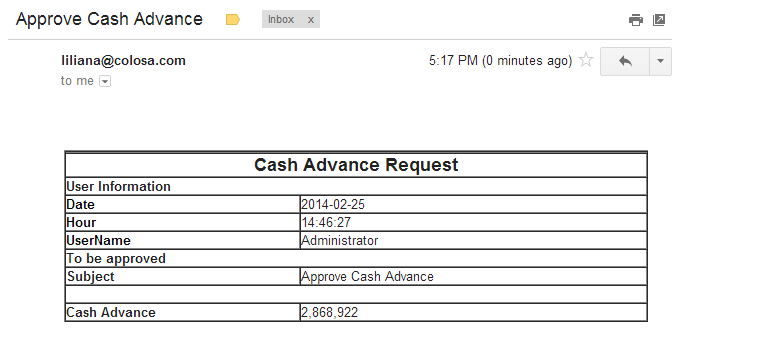
PMFGetUsersOfTask()
PMFGetUsersOfTask() obtains a list of users assigned to a task, no matter what type of assignment rule the task has. This function also includes the users which are assigned to the task as members of groups.
Function Definition
Parameters:
- string taskUid. The unique ID of the task, which can be found in the following ways:
- Use the @@TASK system variable for the unique ID of the current task.
- Use the PMFTaskList() function or taskList() web service.
- Query the wf_<WORKSPACE>.TASK.TAS_UID field in the database or get the starting task of the current process with the following query:
- "SELECT TAS_UID FROM TASK WHERE PRO_UID='" . @@PROCESS . "' AND TAS_START='TRUE'"
- string statusGroup. Optional parameter. Obtains groups with the specified status, which can be: 'ACTIVE', 'INACTIVE' or 'ALL'
- string statusUser. Optional parameter. Obtains users with the specified status, which can be: 'ACTIVE', 'INACTIVE' or 'ALL'
Return value:
The list of users is returned in an array of associative arrays:
Example
Let's display users who are assigned in a task. First, create the trigger with the corresponding function, go to "TRIGGERS", inside the process you are working on, exapnd "ProcessMaker Advanced Triggers", look for the PMFGetUsersOfTask() function and fill it with the following information:
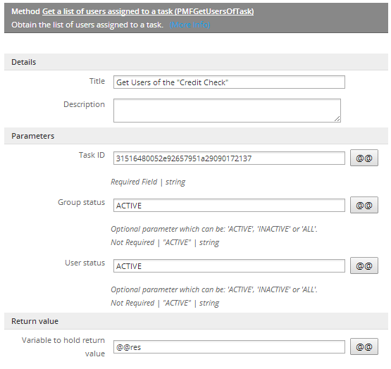
Then, edit its source code, and modify the trigger as follows:
@@res = PMFGetUsersOfTask ($taskUid);
In the case of the example, the task ID will be defined inside the trigger and we will get the information in the @@res variable. In order to get the result you need to enable your debug.
Assign the trigger at any place of the process, it will depend on how it has been designed. What is important here, is the result obtained, so for example, there are three users assigned in the task so when the process is executed, as well as the trigger, the following information will be obtained:
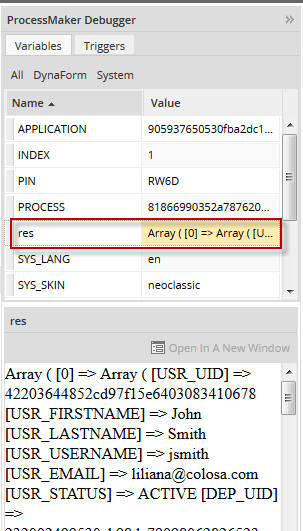
As it can be seen, the information of all users assigned to a task is displayed. This information can help to use the value based assignment, in order to decide which user will get the next task.
PMFLoadGrid()
PMFLoadGrid() populates a grid with data stored in a PM Table or other MySQL table in the wf_<WORKSPACE> database for the current ProcessMaker workspace.
Function Definition
There are two ways to call the PMFLoadGrid() function. The grid can be populated by either defining the gridFields parameter or by defining the gridName, proUid and dynUid parameters. If gridFields is an associative array of field names, then the first method will be used and the gridName, proUid and dynUid will be ignored.
Parameters:
- string sourceData: The name of the table to query or an SQL SELECT statement. Remember that PM Table names are in uppercase by default and PM Tables have 'PMT_' prepended, so a PM Table named "CLIENTS_INFO" will be 'PMT_CLIENTS_INFO'.
- array gridFields: Optional parameter. An associative array which maps the grid fields to their corresponding table fields. The keys in the array contain the names of the fields in a grid and their values are the corresponding names of the fields in the database table:
- array("grid-field1"=>"table-field1", "grid-field2"=>"table-field2", ...)
- Note that it is necessary to list all the fields to be retrieved, even if the field names in the grid are the same as the field names in the database table. If the gridName, proUid and dynUid parameters will be defined, then set this parameter to array(), which is an empty array.
- string gridName: Optional parameter. The field name of the grid in a master DynaForm. Do NOT use the name of the separate grid form.
- string proUid: Optional parameter. The unique ID of the process. To get the unique ID of the current process, use the @@PROCESS system variable.
- string dynUid: Optional parameter. The unique ID of the master DynaForm which contains the grid. To get this ID, open the process for editing, click on DYNAFORMS in the top bar and in the list click on the UID button for the DynaForm.
- string sortField: Optional parameter. The name of the field by which the grid will be sorted. If omitted or set to '' (empty string), then the rows will be left in the order retrieved from the database.
- string ord: Optional parameter. The order by which the grid will be sorted, which is 'ASC' (ascending order) by default. It can be either 'ASC' or 'DESC'.
Return value:
array. It returns data as a numbered array of associative arrays, where the keys in the associative arrays are the names of the fields in the grid. This is the same way that grids are represented in ProcessMaker:
Note that the array starts counting from 1, not 0 like a normal array. If the return value PMFLoadGrid() is assigned to a case variable which has the same name as the field name of a grid in a master DynaForm, then the grid will display the data returned by PMFLoadGrid().
Examples
Below are different examples to populate a grid by:
- Using a table name.
- Using an SQL query.
- Different field names in grids & tables
- Ordering data by a specific field
Using a table name
A grid can be populated from a table by specifying the name of the table. In this example, a company has table named "CLIENTS" (so it is stored in the MySQL database as the table "PMT_CLIENTS").
Step 1: Create the "CLIENTS" table with the following fields:
This table has the following data:
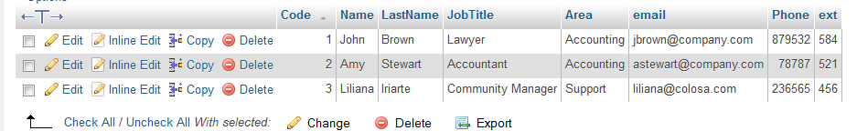
Step 2: Then create a grid using the same field names:
<en>Code</en>
</Code>
<Name type="text" maxlength="64" validate="Any" size="15" mode="edit">
<en>Name</en>
</Name>
<LastName type="text" maxlength="64" validate="Any" size="15" mode="edit">
<en>Last Name</en>
</LastName>
<JobTitle type="text" maxlength="64" validate="Any" size="15" mode="edit">
<en>Title</en>
</JobTitle>
<Area type="text" maxlength="64" validate="Any" size="15" mode="edit">
<en>Area</en>
</Area>
<email type="text" maxlength="64" validate="Any" size="15" mode="edit">
<en>Email</en>
</email>
<Phone type="text" maxlength="64" validate="Any" size="15" mode="edit">
<en>Phone</en>
</Phone>
<ext type="text" maxlength="64" validate="Any" size="15" mode="edit">
<en>Ext.</en>
</ext>
Then, add the grid form to a master DynaForm in a field which is named "clientsGrid".
Step 3: Create the trigger with the PMFLoadGrid() function. go to "TRIGGERS", expand "ProcessMaker Advanced Triggers" and select the PMFLoadGrid() function and fill in the following information:

Its source code will be:
The return value of the PMFLoadGrid() function is assigned to a case variable which has the same name as the field in the master DynaForm which holds the grid. In this case, the list of field names don't need to be defined, since they will be retrieving from the definition of the grid.
Note that this example will only work if the names of the fields in the table are exactly the same as the fields in the grid. Also remember that table and field names are case sensitive by default if MySQL is installed in a Linux or UNIX server.
Step 4: Assign the trigger to fire before the DynaForm which contains the grid. When a case is run, the grid will contain the data queried from the PM Table:
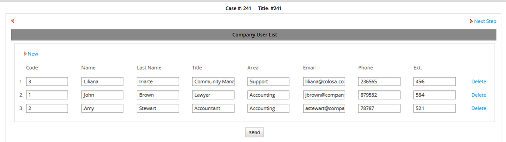
Using a query
Grids can also be populated by using an SQL SELECT statement to query the database. In this example, the PMT_CLIENTS table from Example 1 is queried.
Step 1: Create the trigger. Its source code will be:
array(), 'clientsGrid', @@PROCESS, '20940371452963d0d0a3080077882469');
The first parameter of the PMFLoadGrid is a SELECT statement which searches for records where the first name contains "h" as the second to last letter, such as "John", or the last name which contains the letter "a", such as "Iriarte". In LIKE searches, "%" (percent sign) is a wildcard meaning any number of characters including zero characters and "_" (underscore) is a wildcard meaning any single character. Notice that literal strings such as '%a%' are enclosed in single quotes and the entire SELECT statement is enclosed in double quotes. Remember that names of tables and fields is case sensitive by default if MySQL is installed in a Linux or UNIX server.
Step 2: Assign the trigger to fire before the DynaForm and execute a case. The result will be:
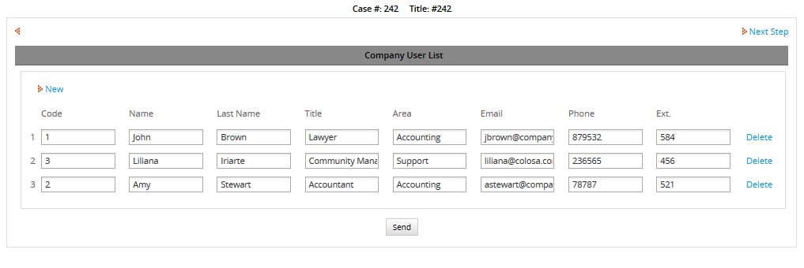
The query SELECT * will return all the fields in the table. To return only specific fields, such as first name, last name and title, then specify the fields in the SELECT statement:
array(), 'clientsGrid', @@PROCESS, '20940371452963d0d0a3080077882469');
Result will be:

The grid can be modified in order to display only fields that were retrieved in the query.
Different field names in grids & tables
If the field names in the grid are different than the field names in the table, then use an associative array which is passed to the gridFields parameter to map the grid fields to the table fields.
Step 1: In the table created in Example 1 change the name of the following fields:
Step 2: Keep the following fields inside the DynaForm:
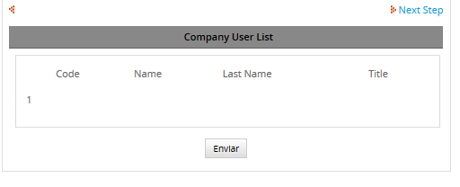
Notice that the fields are in "view" mode.
Step 3: Then create the trigger as follows:
'Code' => 'Code_area',
'Name' => 'Name_employee',
'LastName' => 'LastName',
'JobTitle' => 'JobTitle'
);
@@clientsGrid = PMFLoadGrid('PMT_CLIENTS', $fields);
The keys in the array are the field names of the grid and their values are the field names in the database table, so the "Code" field in the grid maps to the "Code_area" field in the table.
Step 4: Assign the trigger to fire before the DynaForm containing the grid named "clientsGrid". When a case is executed the result will be:
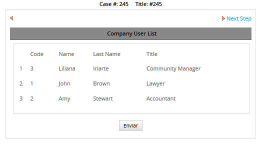
Using queries with different field names in grids & tables
Another way to populate a grid when there are different field names in the grid and the table is to use AS to rename the field names in the SELECT statement.
For example, in the previous example, the Code_area field was renamed as Code and Name_employee field was renamed as Name. The following trigger would do the same thing:
@?clientsGrid = PMFLoadGrid('SELECT Code_area AS code, Name_employee AS NAME, LastName, JobTitle FROM PMT_CLIENTS', array(), 'clientsGrid', @@PROCESS, ''1405066075296508150b1d3042967436');
Ordering data by a specific field
The rows in a grid can be sorted by a specific field in the grid. In this example, the data created in Example 1 will be sorted by the Code field.
Step 1:Create the following trigger:
Step 2:Assign the trigger to fire before the DynaForm and execute a case. Now the grid will be sorted according to the Code field:
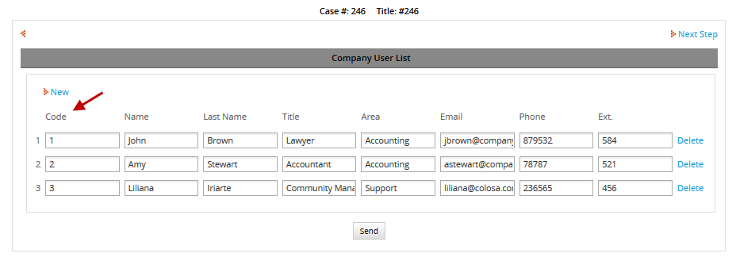
PMFSetOnVacation()
PMFSetOnVacation() set a user's status to VACATION and reassigns that user's cases to another user. Note that the user will not be able to run any more cases, until his/her status is set back to ACTIVE.
Note that only cases which have "TO_DO" status are reassigned. Cases with "DRAFT" status are not reassigned.
Function Definition
Parameters:
- string userUid. The unique ID of the user whose status will be changed to VACATION. The ID can be found in the following ways:
- Get the UID of the currently logged-in user with the @@USER_LOGGED system variable or $_SESSION['USER_LOGGED'].
- Use the PMFUserList() or WSUserList() functions, or the userList() web service.
- Query the wf_<WORKSPACE>.USERS.USR_UID field in the database with executeQuery().
- string userReplacer . Optional parameter. The unique ID of the user who will replace the user who is on vacation and be reassigned to his/her cases. Make sure that this replacement user either has normal or ad hoc assignment to the tasks, so he/she is available to be reassigned. If this parameter is not defined, then the user selected in the Replace by field of the user's profile will be reassigned to the cases.
Return value:
If the user to set on vacation or the replacement user do not currently have ACTIVE status, then returns a string with an error message. Otherwise, returns the following associative array:
Example
In the example below, we will create a Dynaform, where you will be able to decide the person that will replace the user who will be on vacation.
Step 1: Let's create a Dynaform with two dropdown fields, each one of them will have queries which will obtain the user list.
The XML definition will be:
<![CDATA[Select USR_UID, USR_FIRSTNAME from USERS]]>
<en>User to be on vacation</en>
</ChangeStatusOnVacation>
<UserList type="dropdown" required="0" readonly="0" optgroup="0" mode="edit">
<![CDATA[Select USR_UID, USR_FIRSTNAME from USERS]]><en>Replace by</en>
</UserList>
Step 2: Create the trigger with the corresponding function, go to "TRIGGERS" inside the process you are working on, expand "ProcessMaker Advanced Triggers", look for the PMFSetOnVacation() function and fill it with the following information:
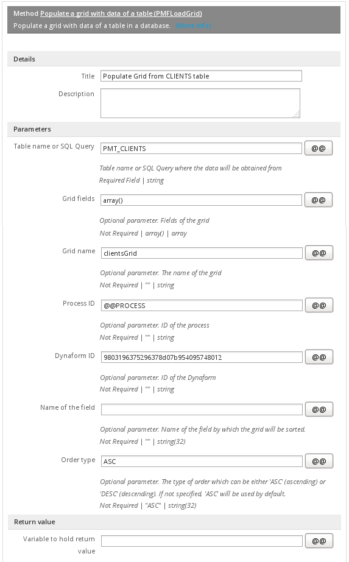
As you can see we are using Dynaform variables in both parameters.
Its definition will be:
Step 3: Make sure you have pending cases for the users you are going to use. We will use two users, Mary Walker and Liliana Iriarte. Logging with Mary Walker user and go to her inbox we will see 10 cases:
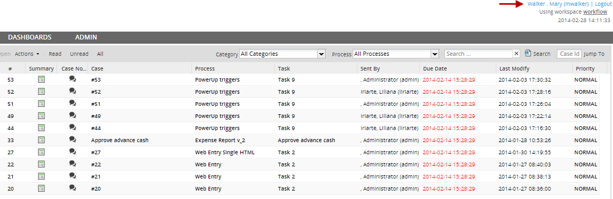
Then, execute a case, in the first field choose Mary Walker, since she will be the person to be on vacation and she will be replaced by Liliana Iriarte, user to have chosen on the second field:
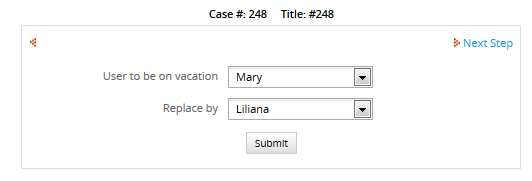
Click on Submit button, and if you have the debugger enabled, inside the return variable, you will see the number of reassigned cases and their corresponding information:
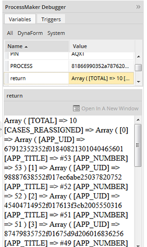
Logging with 'Mary Walker' user, we will see her inbox folder empty:

Finally, logging in as 'Liliana Iriarte' user, we will see all reassigned cases inside her inbox folder: